Section I (50 marks)
Answer all the questions in this section in the spaces provided.
1. Evaluate 190.1 x 30, correct to 3 significant figures. (2 marks)
2. Find the sum of the first 10 terms in the Geometric Progression 3, 6, 12, (3 marks)
3. Given that 5, x, 35 and 84 are in proportion, find the value of x. (3 marks)
4. The base of a triangle is 3 cm longer than its height and its area is 35 cml. Determine the height and base of the triangle. (4 marks)
5. The figure below is a map of a piece of land on a grid of l cm squares.
Estimate the area of the map in square centimetres. (3 marks)
6. A chord of a circle, radius 5 cm, subtends an angle of 30° at the centre of the circle. Determine the length of the chord, correct to 2 decimal places. (3 marks)
7. The extension (E), in cm, of a rubber band when pulled by a force (F) was found experimentally and recorded as shown in the table below:
(a) On the grid provided, draw a graph of extension(E) against force(F). (2 marks)
(b) Use the graph to determine the extension when the force is 7 units. (1 mark)
8. The position of towns M and N are M(0 °, 5 l °W) and N(0 °, 37 °E). Find the distance between the two towns in kilometres, correct to one decimal place.
(Take the radius of the earth as 6370km and π = 22/7) (3 marks)
9. The table below shows the values of y = 2sin(6 + 30°) for 0° S 95 360°.
(a) On the grid provided below, draw the graph of y = 2sin(0+ 30°) for 0° S 6 5 360 Use l cm for 30° on the x-axis and 2cm for one unit on the y-axis. (3 marks)
(b) Use the graph to detennine the value of y when 0 = 162°. (1 mark)
10. The figure below represents the distance covered by a car within a given period of time
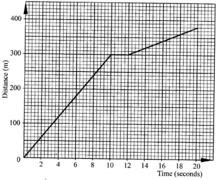
Find the average speed of the car in kilometres per hour. (3 marks)
11. Kitonga deposited Ksh50000 in a bank which paid compound interest at the rate of 10% per annum. Find the compound interest accrued by the end of the fourth year. (3 marks)
12. The number of different vehicles allowed through a road block was recorded as follows:
Represent the above data in a pie chart. (3 marks)
13. Somi bought 2 pencils and 3 rubbers for Ksh 60 from a certain shop. Miheso bought l pencil and 2 rubbers for Ksh 35 from the same shop. Find the price of one pencil and that of one rubber. (3 marks)
14. (a) Find a matrix which, when multiplied by matrix M =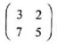
gives the identity matrix. (2 marks)
(b) Given that N = 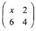
is a singular matrix, find the value of x. (2 marks) 15. A square QRST with vertices Q(l,1), R(3,1), S(3,3) and T(l,3) is transfomed by the matrix 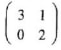
. Find: (a) the area of square QRST; (2 marks)
(b) the area of image Q’R’S’T’. (2 marks)
16. Given that p = 6i + Zj, determine the magnitude of p, correct to 2 decimal places. (2 marks)
Section II (50 marks)
Answer any five questions from this section in the spaces provided.
17. The second term of an arithmetic progressi0n(AP) and fourth tenn of a geometric pr0gression(GP) are each 80. The sixth terms of the AP and GP are each 320.
(a) Find:
(i) the first term and the common differences of the AP. (2 marks)
(ii) the first term and the common ratio of the GP. (2 marks)
(b) Determine the 20*“ term of the AP. (2 marks)
(c) Determine the difference between the sum of the first 12 terms of the GP and the sum of the first l2 terms of the AP. (4 marks)
18. (a) (i) Complete the table below for the values of y = x2 - x — 6 for -3 ≤ 5 x ≤ 4. (2 marks)
(ii) Find y whenx = (l mark)
(b) On the grid provided, draw a graph of y = xi —x ~ 6 for —3 5 x 5 4. (3 marks)
(c) On the same grid, draw lme y = 3- x + l and hence solve the equation x2—x~6= ;3x+l. (4marks)
19. The marked price of a wall unit was Ksh 50 000. The price on hire purchase (HP) terms was 175% of the marked price.
(a) A customer bought the wall unit in cash and was offered 10% discount. Find the amount of money the customer paid for the wall unit. (2 marks)
(b) A second customer decided to purchase a similar wall unit on HP terms.
(i) Determine the HP price. (2 marks)
(ii) The customer paid 20% of the HP price as deposit and was to pay the balance in 28 equal monthly instalments. Find the amount of each monthly instalment. (3 marks)
(c) Athird customer bought a similar wall unit in cash by taking a loan equal to the marked price. The loan was to be repaid in 15 months and the bank charged interest at the rate of 4% compounded monthly.
(i) Find, correct to the nearest shilling, the amount of money the third customer paid the bank. (2 marks)
(ii) Find the amount of money the third customer spent more than the marked price. (l mark)
20. The figure below shows triangle ABC IN which AB=6cm,BC=8cm,BD=4.2cm and AD=5.3cm.Angle CBD=45°
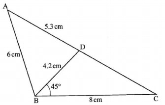
Calculate to one decimal place
the length of CD; (3 marks)
size of angle ABD; (3 marks)
size of angle BCD; (2 marks)
area of triangle ABD. (2 marks)
21. Mawira, a poultry farmer carried out the following transactions during the month of February 2017:
February l: Had Ksh 10000 carried forward from January 2017
3:Bought 2 bags poultry feed @Ksh 1250
7:Paid Ksh 750 for water
11:Bought materials for construction for Ksh 1 900
13:Received Ksh 12 000 from sale of broilers
17:Sold 500 eggs at Ksh 8 each
21:Paid Wages to 2 casuals at Ksh 1 750 each
24:Sold chicks for Ksh 5 000
25:Paid Ksh l 300 for electricity
26:Sold 30 layers at Ksh 500 each
28:Bought incubator for Ksh 12 500
Prepare a single column cash book for Mawira’s transactions and balance it as at ls‘ March 2017. (10 marks)
22. The table below shows the marks of 50 candidates in a test.
(a) Draw a cumulative frequency curve for the data. (5 marks)
(b) Use the graph to determine:
(i) the median mark; (2 marks)
(ii) the percentage of students who scored above 64%. (3 marks)
23. Two boxes B and C contain identical balls except for the colour. Box B contains 5 violet balls and 3 green balls. Box C contains 3 violet balls and 4 green balls.
(a) A ball is drawn at random from each box. Find the probability that both balls are of the same colour. (4 marks)
(b) Two balls were drawn at random from each box, one ball at a time without replacement. Find the probability that:
(i) the two balls drawn from box B or box C are violet; (4 marks)
(ii) all the four balls drawn are violet. (2 marks)
24. The vertices of a triangle ABC are A(2, 2), B(5, 3) and C(3, 5)
. (a) Find the vertices of A A’B'C' the image of A ABC under the transformation represented by the matrix 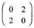
(2 marks)
(b) Triangle ABC is mapped onto A A”B”C” whose vertices are A"(—2, 2), B"(-5, 3) and C"(~3, 5) Find the matrix of this transformation. (4 marks)
(c) Triangle ABC undergoes two successive transformations PQ = 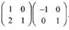
Determine the vertices of A A”’B”’C"', the image of AABC, under the combined transformation. (4 marks)
SECTION I (50 marks)
l90.lx30=5703
= 5700
Common Ratio? = 6/3=2 3(210/2-1)/2 -1)
3(1024_1)/1= 3069
5/x=5/34
x=5x84/35
=12
4. The base of a triangle is 3 cm longer than its height and its area is 35 cm. Determine the height and base of the triangle. (4 marks)
1/2(x+3)x=35
x2+3x-70=0
(x+10)(x-7)=0
x=7
0r x=-10
Full square =11
Fractional square = 26
Area estimate = 11+26/2
=24cm2
Let length be x
x = 5 sin 30° sin 75°
x = 2.59
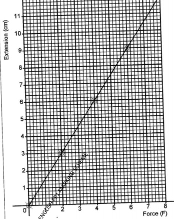
- Extensions when forces is 7 units 10.5cm
Latitude difference: 51° + 37° = 88°
Distance in kilometers:
= 88⁄360 x 22⁄7 x 2 x 6370
= 9787.6
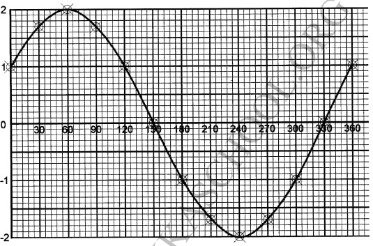
(b) Use the graph to detemine the value of y when 0 = 162°. (1 mark)
When θ = 162°,y=0.4
10.
Distance covered = 380m
Time taken = 20s
speed =
380 ÷ 201000 3600
= 380 x 3600 1000 20
= 68.4 km/h
50,000 x 1.14 - 50,000 = 50,000(1.14 - 1) = 50,000(1.4641 - 1) = 50,000(0.4641)
= Ksh 23,205
12.
Angle representing different vehicles:
Cars = 59⁄180 x 360 = 118°
Lorries = 35⁄180 x 360 = 70°
Pickups = 26⁄180 x 360 = 52°
Buses = 47⁄180 x 360 = 94°
Tankers = 13⁄180 x 360 = 26°
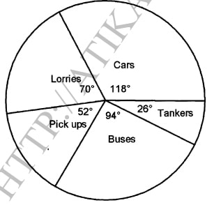
13.
2p + 3r = 60 ....(i) 1p + 2r = 35 ....(ii) 2p + 4r = 70 ....(iii)
(iii) - (i)
r = 10
1p + 2(10) = 35
p = 35
rubber is sh10 and pencil is sh35
14. (a) Find a matrix which, when multiplied by matrix M =
(b) Given that N =
is a singular matrix, find the value of x. (2 marks)
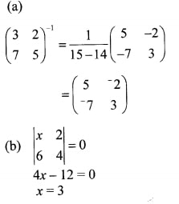
15. A square QRST with vertices Q(l,1), R(3,1), S(3,3) and T(l,3) is transformed by the matrix
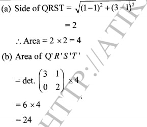
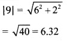
SECTION II (50 marks)
17.
(a)
(i) a + d = 80
a + 5d = 320
4d = 240
d = 60
a = 20
(ii) ar3 = 80 ....(i) ar5 = 320 ....(ii)
r2 = 320 = 4 80
r = 2
a = 80 ÷ 8 = 10
(b) A.P.T20 = 20 + 19 x 60
= 1160
(c) G.P.S12 = 12(212 - 1) 2 - 1
= 49140
A.P.S12 = 12⁄2{2 x 12 + (12 - 1)60}
= 4104
Difference = 49140 - 4104
= 45036
18.
(a) (i)
(ii) y = (½)2 - ½ - 6 = -6.25
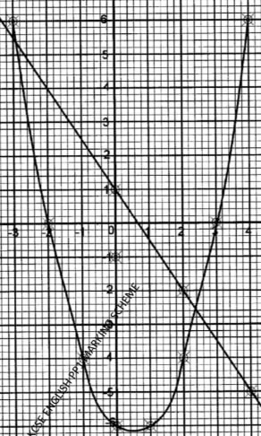
(c) On the same grid, draw line y = 3- x + l and hence solve the equation x2—x~6= ;3x+l. (4marks)
Line y = -3/2x+1
=2.4
=-2.8
50,000x0.9
=ksh 45000
50000x1.75
=87,500
Amount to pay in instalments;
87500x0.8
ksh 70,000
Monthley instalments =70000/28
ksh2500
(c) A third customer bought a similar wall unit in cash by taking a loan equal to the marked price. The loan was to be repaid in 15 months and the bank charged interest at the rate of 4% compounded monthly.
50,000x1.0415
90047.17528
90047
90047-50000=ksh4007
20.
(a) Length of CD
CD2 = 82 + 4.22 - 2 x 8 x 4.2 Cos 45°
= 64 + 17.64 - 16 x 4.2 x 0.7071
= 81.64 - 47.52 = 34.12
CD = √ 34.12 = 5.8
(b) Angle ABD
5.32 = 62 + 4.22 - 2 x 6 x 4.2 Cos θ
Cos θ = (36 + 17.64 - 5.32) ÷ 50.4
θ = Cos-1 0.5069
θ = 59.5°
(c) Angle BCD
sin BCD = sin 45 4.2 5.8
sin BCD = 4.2 x sin 45 5.8
angle BCD = sin-10.5120
= 30.8°
(d) Area triangle ABD
= ½ x 6 x 4.2 sin 59.5
= 10.9cm2
21.
Balance b/f = 46,000 - 22,450
= Ksh 23,550
22.
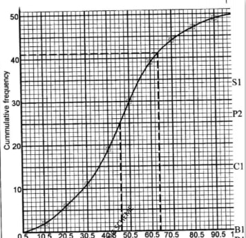
Median=46
50-41
=9
=9/50x100
=18%
23.
(a) P(VV) = 5⁄8 x 3⁄7
= 15⁄56
P(GG) = 3⁄8 x 4⁄7
= 12⁄56
P(same colour) = 15⁄56 + 12⁄56
= 27⁄56
(b)
(i) P(VBVB) = 5⁄8 x 4⁄7
= 5⁄14
P(VCVC) = 3⁄7 x 2⁄6
= 1⁄7
P(VBVB) + P(VCVC)
= 5⁄14 + 1⁄7 = 1⁄2
ii) P(all violet) = 5⁄14 x 1⁄7
= 5⁄98
. (a) Find the vertices of A A’B'C' the image of A ABC under the transformation represented by the matrix
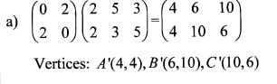
(b) Triangle ABC is mapped onto A A”B”C” whose vertices are A"(—2, 2), B"(-5, 3) and C"(-3, 5) Find the matrix of this transformation. (4 marks)
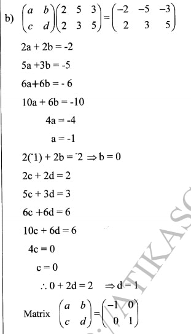
(c) Triangle ABC undergoes two successive transformations PQ =
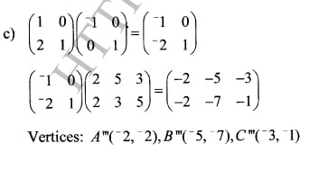